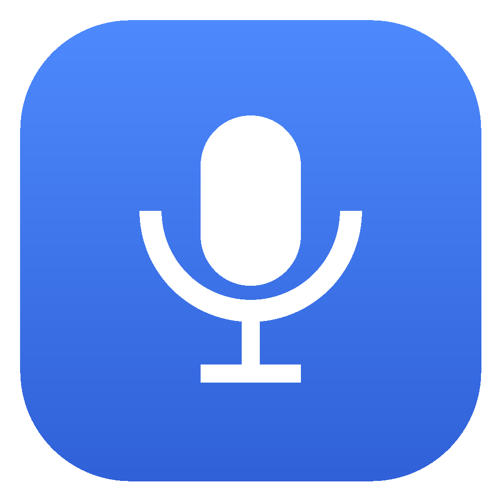

Istalgan ilovada tugmani bosing, oʻzbekcha gapiring — matn kursor turgan joyga oʻzi yoziladi. Telegram, brauzer, hujjat, xat — qayerda boʻlsangiz.
Dastur va oʻzbek tili modeli bitta faylda keladi. Internet faqat yuklab olish uchun kerak — oʻrnatgandan keyin butunlay internetsiz ishlaydi.
macOS 13+ · Apple Silicon va Intel
Diktovka tugmasi: ⌃ ⌥ D
Mac uchun yuklab olish.pkg · 789 MB · hammasi ichida
Windows 10 va 11 · 64-bit
Diktovka tugmasi: Ctrl Alt D
Windows uchun yuklab olish.exe · 845 MB · hammasi ichida
Bu ilova bepul va shunday qoladi — reklama yoʻq, obuna yoʻq, maʼlumotingiz sotilmaydi. Agar foydali boʻlsa va imkoningiz boʻlsa, qoʻllab-quvvatlashingiz mumkin. Majburiy emas, ilovaning hamma imkoniyatlari baribir ochiq.
Qoʻllab-quvvatlaganingiz uchun rahmat — bu keyingi yangilanishlarga va yangi loyihalarga yordam beradi.
Kotib'ni Muhammad Mirqobilov (pasportda Mirkabilov) yaratgan — oʻzbek tili uchun oflayn dasturlar yozuvchi dasturchi. Boshqa ishlari: Lugʻatchi, Valyutachi, Yozu, mirqobilov.com. Savol va takliflar: @mirqobilov_mm, yangiliklar: @mirqobilov_dev.
Uch qadam. Boshqa hech narsa kerak emas.
Windows'da standart qurilma baʼzan «Stereo Mix» boʻlib qoladi — u ovozingizni emas, kompyuterdagi ovozni yozadi va tushunarsiz matn chiqaradi.
Ilova birinchi ochilishda Sozlamalarni koʻrsatadi va bunday qurilmalarni ogohlantirib beradi. Bluetooth quloqchin ham aniqlikni pasaytiradi — imkon boʻlsa oddiy mikrofon ishlating.
785 MB fayl uchun barqaror internet kerak. Ulanish uzilsa oʻrnatuvchi uch marta qayta uradi, keyin xato beradi. Ikkita yechim bor:
ggml-rubaistt.bin faylini setup.exe turgan
papkaga qoʻying va oʻrnatuvchini qayta ishga tushiring. U faylni
oʻzi topadi.
Ilova hali kod imzosi sertifikati bilan imzolanmagan, shuning uchun Windows ehtiyot boʻladi. Bir martalik yechim:
Yuklab olingan .pkg faylni ikki marta bosing →
Continue → Install. macOS administrator
parolini soʻraydi — bu ilovani /Applications papkasiga joylash uchun.
Ilova Apple notarizatsiyasidan oʻtgan va imzolangan, shuning uchun «nomaʼlum dasturchi» ogohlantirishi chiqmaydi.
Oʻrnatilgach ilova oʻzi ishga tushadi va menyu satrida 🎙 ikonka paydo boʻladi — sozlamalar, fayl transkripsiyasi va donat shu yerda.
Matn avtomatik joylashishi uchun bir marta ruxsat kerak: System Settings → Privacy & Security → Accessibility → «Kotib» ni qoʻshing va yoqing.
Windows'da bunday ruxsat kerak emas.
Ovozingiz hech qayerga yuborilmaydi.
rubaiSTT modeli — umumiy modellar emas, aynan oʻzbek nutqi uchun oʻqitilgan.
Server yoʻq, internet kerak emas. Ovoz ham, matn ham qurilmangizda qoladi.
Windows'da NVIDIA, AMD va Intel — farqi yoʻq. Videokartasiz ham ishlaydi.
Diktovka tugmasi band boʻlsa yoki yoqmasa — Sozlamalardan oʻzgartiring.
Menyu satrida jim turadi. Model uch daqiqa ishlatilmasa xotiradan boʻshaydi.
Butun kod GitHub'da. Nima qilayotganini oʻzingiz tekshirishingiz mumkin.
Oʻlchangan qiymatlar — 208 soniyalik oʻzbek nutqi, RTX 3060 va Ryzen 7 5800X.
| Rejim | Vaqt | 10 s nutq uchun |
|---|---|---|
| Videokarta (Vulkan) | 25 s | ~1,2 s |
| Protsessor | 196 s | ~9,4 s |
Aniqlik: Google FLEURS oʻzbek toʻplamida soʻzlarning 83% toʻgʻri tanilgan. Bu yangiliklar uslubidagi murakkab matnlar — kundalik oddiy gaplarda aniqlik yuqoriroq.